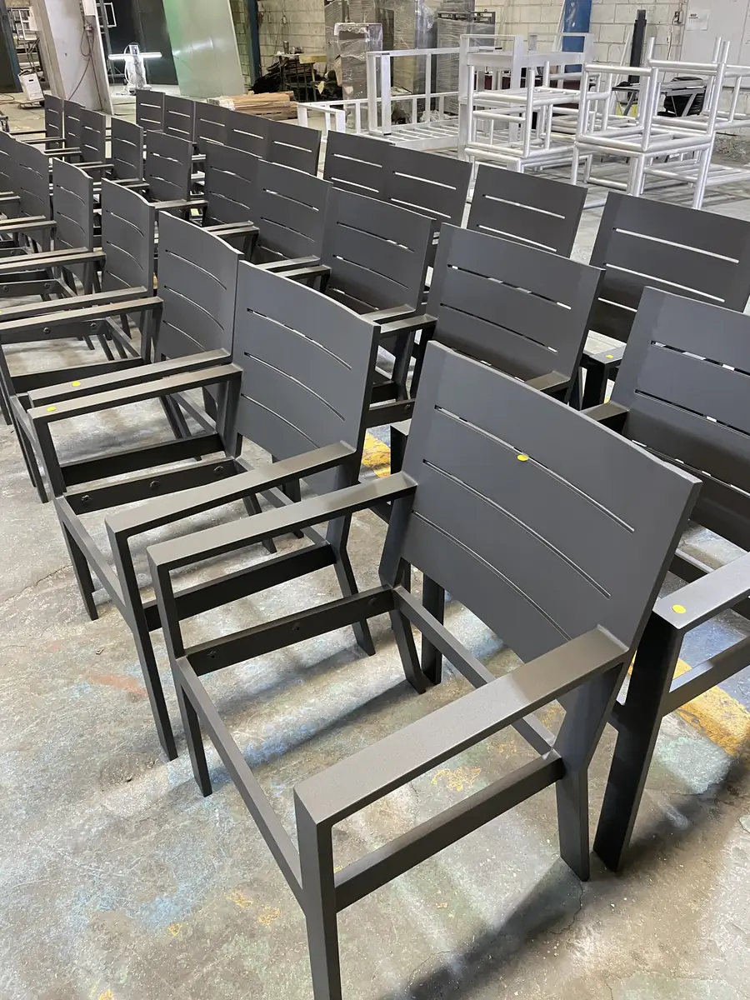

Los tipos de pintura en polvo se clasifican por la resina que forma el recubrimiento, y las cuatro más usadas en piezas metálicas son la epóxica, el poliéster, la híbrida (epoxi-poliéster) y el poliuretano. Cada una se comporta distinto frente a los químicos, el sol y la deformación de la pieza, así que elegir bien es una decisión técnica y no solo una cuestión de color.
En esta guía te explicamos qué es cada resina, dónde funciona mejor y dónde se queda corta, con una tabla comparativa y una guía de decisión por uso y por industria. En Steel Paint no fabricamos ni vendemos pintura, somos maquiladores. Lo que buscamos es que llegues con criterio a la conversación con tu maquilador, que es quien te ayuda a definir el polvo con base en la ficha técnica del fabricante.
¿Cuáles son los tipos de pintura en polvo?
La pintura en polvo está formada por una resina, pigmentos y aditivos, y la resina define casi todas las propiedades funcionales del acabado. Si quieres repasar cómo se aplica y se cura, empieza por nuestra guía sobre qué es la pintura electrostática. Aquí nos concentramos en la formulación.
No confundas la resina con el acabado. La resina determina la resistencia química, el comportamiento al sol y la flexibilidad; el acabado determina el brillo, la textura y el color, y lo revisamos en la guía de tipos de acabados en pintura electrostática.
Pintura en polvo epóxica
La pintura en polvo epóxica para metal es la que ofrece la mayor resistencia química y anticorrosiva de las cuatro. Forma una película dura, con excelente adhesión al metal.
Resistencia química: suele resistir bien aceites, grasas, solventes y ácidos o álcalis diluidos, por eso es la resina clásica para piezas que trabajan en contacto con fluidos industriales.
Exterior y UV: es su punto débil. La radiación ultravioleta degrada la resina y provoca caleo (una capa polvosa en la superficie), pérdida de brillo y cambio de color, sobre todo amarillamiento en tonos claros. En piezas visibles el efecto se nota pronto.
Flexibilidad: tiene buena resistencia al impacto y al doblez, algo que se verifica con ensayos como ASTM D522 (doblez en mandril) y ASTM D2794 (impacto).
Usos típicos y limitaciones: piezas de interior, gabinetes, equipo expuesto a aceites o químicos y capa base bajo un acabado de poliéster. No se recomienda como acabado en exterior con sol directo.
Pintura en polvo de poliéster
El poliéster es la resina más utilizada en piezas industriales y arquitectónicas. Su fortaleza es el equilibrio: buena resistencia mecánica, buen comportamiento en exterior y una gama muy amplia de colores y acabados.
Exterior y UV: resiste mucho mejor la radiación ultravioleta que la epóxica y conserva color y brillo con exposición al sol, por eso es el punto de partida para piezas de intemperie. Lo vemos en detalle en la guía de pintura para muebles metálicos de exterior.
Poliésteres de alta durabilidad: son formulaciones de poliéster pensadas para exteriores exigentes, con mayor retención de color y brillo. En arquitectura se especifican con normas como AAMA 2604. Cuestan más que el poliéster estándar y solo se justifican cuando el proyecto o la exposición al sol lo piden.
Variantes con y sin TGIC: la diferencia está en el agente de curado. Las formulaciones sin TGIC se prefieren en mercados con regulaciones estrictas, sobre todo en piezas de exportación.
Resistencia química y limitaciones: es buena para uso general, pero menor que la de la epóxica frente a solventes y químicos agresivos. Si tu pieza está en un ambiente químico severo, el poliéster solo puede quedarse corto.
Usos típicos: herrería, barandales, perfiles, mobiliario, gabinetes y autopartes, tanto en interior como en exterior.
Pintura en polvo híbrida (epoxi-poliéster)
La pintura en polvo híbrida mezcla resina epóxica y de poliéster. Busca combinar la dureza y el buen aspecto de la primera con algo más de estabilidad de color y un costo contenido.
Qué aporta: una película dura y lisa, buena resistencia mecánica y química moderada.
Exterior y UV: es limitada. Se degrada por caleo cuando está a la intemperie, así que no es la elección para exteriores prolongados.
Usos típicos y limitaciones: piezas de interior con exigencias moderadas: estantería, mobiliario de oficina, gabinetes y equipo. Es una solución intermedia, más económica que el poliéster puro en muchas formulaciones, pero sin la resistencia química de la epóxica ni el desempeño en exterior del poliéster.
Pintura en polvo de poliuretano
El poliuretano es la resina de mayor desempeño de este grupo cuando el problema es el desgaste. Da un acabado liso y duro, con muy buena resistencia al rayado y a la abrasión.
Desgaste y abrasión: ofrece la mejor resistencia a la abrasión y al rayado de las formulaciones estándar, y buena resistencia química.
Exterior y UV: tiene buena estabilidad de color y brillo a la intemperie, por lo que funciona cuando la pieza combina sol y desgaste físico.
Usos típicos y limitaciones: pisos metálicos, estructuras de tráfico, equipo de trabajo y mobiliario exterior de uso intensivo. Cuesta más que el poliéster convencional y suele ser menos tolerante a espesores altos, por lo que exige un curado bien controlado.
Comparativa de resinas: tabla de decisión
Esta tabla resume las diferencias en términos generales de la industria. Los valores son orientativos: cada fabricante publica los suyos en la ficha técnica de su polvo, y se verifican con ensayos como ASTM D522 (doblez), ASTM D2794 (impacto), ASTM G154 (exposición UV) y ASTM B117 (niebla salina).
| Resina | Resistencia química | Exterior y UV | Flexibilidad e impacto | Usos típicos | Limitación principal |
|---|---|---|---|---|---|
| Epóxica | Muy alta | Baja: caleo y cambio de color | Alta | Interior, químicos y capa base | No apta para sol directo |
| Poliéster | Media | Alta (muy alta en alta durabilidad) | Buena | Exterior y uso general | Menor resistencia química |
| Híbrida | Media | Baja: caleo en exterior | Buena | Interior de uso general | No apta para intemperie |
| Poliuretano | Alta | Alta | Buena, con alta dureza | Abrasión, tráfico y exterior | Costo mayor; curado exigente |
Cómo elegir el polvo según el uso y la industria
Con la tabla en mente, esta es la guía práctica para decidir según el uso de la pieza:
Interior sin exigencias químicas: la híbrida suele ser suficiente y económica. Si la pieza puede cambiar de ambiente con el tiempo, el poliéster te deja un margen de seguridad.
Exterior: poliéster formulado para exterior, y poliéster de alta durabilidad o poliuretano si el sol es intenso o el proyecto exige retener el color. Evita la epóxica como acabado final.
Contacto con aceites, solventes o químicos: epóxica. Si además hay sol, se combina como base con un acabado de poliéster.
Piezas que se doblan o se deforman después de pintadas: elige una resina con buena flexibilidad y pide que se verifique con la prueba de doblez ASTM D522, para que el recubrimiento no se fisure durante el ensamble.
Piezas galvanizadas: el galvanizado cambia el pretratamiento. Revisa la comparativa entre recubrimiento en polvo y galvanizado y confirma la combinación con tu maquilador.
Así se traduce esa guía en las industrias que atendemos en Monterrey:
Automotriz y autopartes: poliéster liso, satinado o mate en la mayoría de los componentes, y epóxica o híbrida en piezas que trabajan con fluidos, calor o vibración. Lo desarrollamos en la guía para la industria automotriz de Monterrey.
Muebles metálicos y herrería: poliéster en piezas de exterior e híbrida en mobiliario de interior.
Maquinaria y equipo industrial: epóxica o híbrida, con textura, donde pesan la resistencia química y la durabilidad más que la estética.
Construcción y arquitectura metálica: poliéster de exterior, con alta durabilidad cuando el proyecto lo especifica.
HVAC y refrigeración: gabinetes y carcasas, normalmente en híbrida o poliéster según el ambiente donde operen.
En Steel Paint asesoramos a cada cliente en la elección del polvo antes de iniciar el proceso, con base en la ficha técnica del fabricante y en las condiciones de uso de la pieza. Si aún estás decidiendo con quién trabajar, revisa cómo elegir un maquilador de pintura en polvo en Monterrey.
Preguntas frecuentes sobre los tipos de pintura en polvo
¿Cuál es el mejor tipo de pintura en polvo para exterior?
Para intemperie, el punto de partida es el poliéster formulado para exterior. Si la pieza recibe sol intenso durante mucho tiempo o el proyecto exige que el color y el brillo se mantengan, conviene un poliéster de alta durabilidad o un poliuretano. La epóxica no es la mejor opción como acabado a la intemperie.
¿Qué diferencia hay entre la pintura en polvo epóxica y la de poliéster?
La epóxica destaca por su resistencia química y anticorrosiva, pero se degrada con la radiación ultravioleta. El poliéster resiste mucho mejor el sol y es más versátil, aunque su resistencia química es menor. Por eso la epóxica se usa sobre todo en interiores y el poliéster en piezas de uso general y de exterior.
¿Se puede usar pintura epóxica en exterior?
Se puede aplicar, pero el sol la degrada: aparece una capa polvosa (caleo), pierde brillo y cambia de color, sobre todo el amarillamiento en tonos claros. Si la pieza necesita resistencia química y va a la intemperie, lo habitual es epóxica como base y poliéster como acabado.
¿Qué es una pintura en polvo híbrida?
Es una mezcla de resina epóxica y de poliéster, también llamada epoxi-poliéster. Da un acabado duro y liso a un costo contenido, y es una buena opción para piezas de interior con exigencias moderadas. No es la mejor elección para exteriores porque se degrada con el sol.
¿Cómo sé qué pintura en polvo necesita mi pieza?
Parte de tres preguntas: dónde va a estar la pieza (interior o exterior), qué va a tocar (aceites, químicos o solo el ambiente) y si se va a doblar o a golpear después de pintada. Con esas respuestas y la ficha técnica del polvo, tu maquilador confirma la resina adecuada.
¿Listo para elegir el polvo de tus piezas?
La resina define cómo se va a comportar tu acabado: epóxica para resistencia química, poliéster para exterior y uso general, híbrida para interior con exigencias moderadas y poliuretano cuando el desgaste es lo que más importa. Elegir la correcta desde el inicio evita retrabajos, y por eso conviene decidirlo con un maquilador que conozca el proceso completo.
En Steel Paint llevamos más de 10 años trabajando en Nuevo León, con línea automatizada, pretratamiento propio y dos hornos: uno continuo para producción en serie y uno batch para lotes pequeños o piezas especiales. Da el siguiente paso: calcula el costo estimado de tu proyecto, envíanos fotos o planos de tus piezas por WhatsApp o cuéntanos tu proyecto y un asesor te ayudará a definir el polvo y el acabado adecuados.